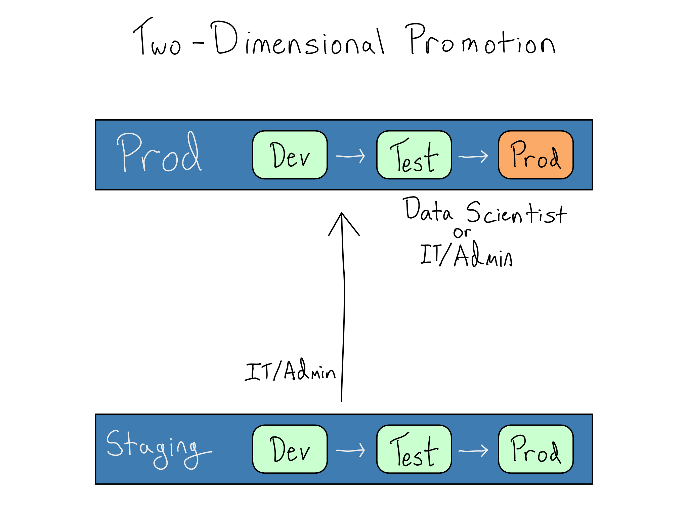
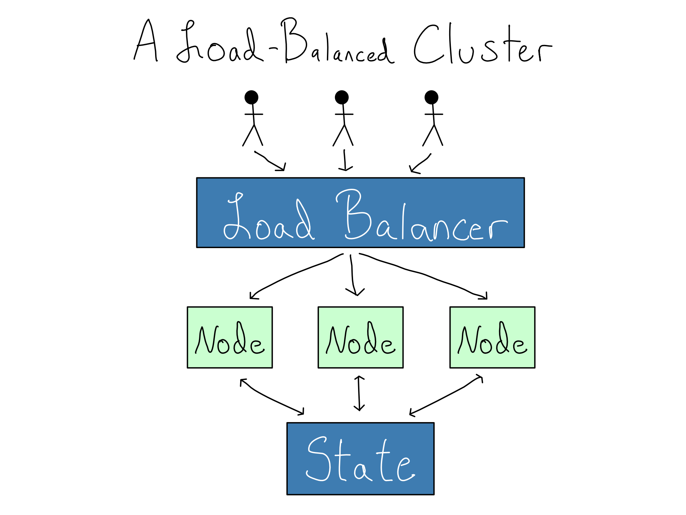
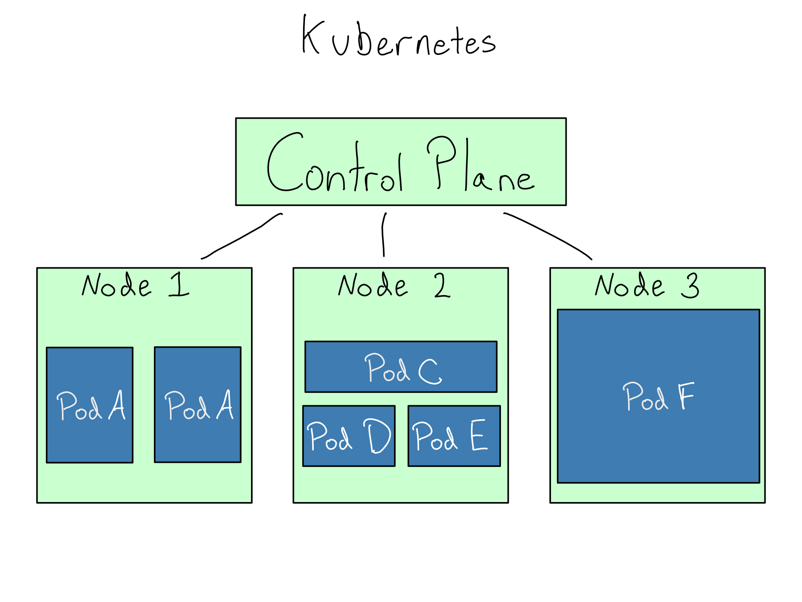

17 Compute at enterprise scale
Many enterprise data science platforms have requirements that quickly outstrip the capacity of a modest server. It’s common to have way more users than can fit on a single server or have to support intermittent jobs that require more capacity than is affordable to have permanently available.
Providing a platform that supports hundreds or thousands of users requires the complexity of coordinating multiple servers. And as the number of users and the importance of a data science platform rises, downtime becomes more expensive, so the system’s stability becomes paramount.
This chapter will help you understand how enterprise IT/Admins think about managing and scaling that many servers. It will also help you figure out what you need to communicate to your organization’s IT/Admins so they can appropriately scale the environment.
17.1 DevOps best practices
The process of standing up an environment comes in two stages. First the servers and networking need to be provisioned, which involves creating all the required resources. Once that’s done, they must be configured, which means installing and activating applications like Python, R, JupyterHub, and RStudio Server.
The IT/Admin group manages anywhere from dozens to thousands of servers in an enterprise. In many enterprises, provisioning and configuration are done by separate groups. There is often one central team that provisions servers, another central function that manages networking, and another team that does configuration and application administration.
To keep that many servers manageable, the IT/Admin group tries to make them standardized and interchangeable. This idea is often encompassed in the adage that “servers should be cattle, not pets”. That means that you almost certainly won’t be allowed to SSH in and make whatever changes you might want as a data scientist.
Avoiding this complexity is why many organizations are moving away from directly managing servers. Instead, they outsource server management by acquiring PaaS or SaaS software from cloud providers.
Indeed, in many organizations, no one is allowed to SSH in and make changes. Instead, all changes must go through a robust change management process and are deployed via Infrastructure as Code (IaC) tools so the environment can always be torn down and replaced quickly.
There are many different IaC tools that your IT/Admins may use. These include Terraform, Ansible, CloudFormation (AWS’s IaC tool), Chef, Puppet, and Pulumi. Most of these tools can do both provisioning and configuration; however, since most specialize in one or the other, many organizations use a pair of them together.
Some enterprises manage servers without IaC. These usually involve writing extensive run books to tell another person how to configure the servers. If your spidey sense is tingling, you’re correct that this probably isn’t nearly as good as IaC. Learning that your enterprise IT/Admin organization doesn’t use IaC tooling is a red flag.
Along with making deployments via IaC, organizations that follow DevOps best practices use a Dev/Test/Prod setup for making changes to servers and applications. The Dev and Test environments, often called lower environments, are solely for testing changes to the environment itself. To differentiate these environments from the data scientist’s Dev and Test environments, I often refer to this as Staging.1
Generally, you won’t have access to the Staging environment at all, except for potentially doing user acceptance testing for changes there.
In this setup, promotion is a two-dimensional grid, with IT/Admins working on changes to the environment in Staging and data scientists working on data science projects in Dev and Test within the Prod IT/Admin environment. Ultimately, the goal is to create an extremely reliable Prod-Prod environment.

In enterprises, moves from staging to prod, including upgrades to applications or operating systems or adding system libraries have rules around them. They may need to be validated or approved by security. In some highly regulated environments, the IT/Admin group may only be able to make changes during specific times. This can cause tension between a data scientist who wants a new library or version now and an IT/Admin who can’t move that fast.
In addition to changes from staging to prod, enterprises sometimes undergo a complete rebuild of their environments. Many of those rebuilds result from a move to the cloud, which can be a multi-year affair.
17.2 Compute for many users
With many data scientists, you outstrip the ability of any one server – even a big one – to accommodate all the work that needs to get done. How many data scientists it takes to overtax a single server depends entirely on what data scientists do at your organization. You may hit it with only one person if you do intensive simulation work or deep learning. On the other hand, I’ve seen organizations that primarily work on small data sets that can comfortably fit 50 concurrent users on a single server.
Once you need multiple servers to support the data science team(s), you must horizontally scale. There is a simple way to horizontally scale, giving every user or group a standalone server. In some organizations this can work very well. The downside is that this results in a lot of environments. That can be a hassle for the IT/Admin to manage or they delegate server management to the individual teams.
Many enterprises don’t want a profusion of team-level data science environments. Instead, they want to run one centralized service that handles much of the organization’s data science needs. Managing just one environment simplifies operations in some ways but also drastically increases the cost of downtime. For example, one hour of downtime for a platform that supports 500 data scientists wastes over $25,000.2
Organizations often introduce Service Level Agreements (SLAs) or Operating Level Agreements (OLAs) about how much downtime is allowed. These limits are usually measured in nines of uptime, which refers to the proportion of the time that the service is guaranteed to be online. So, a one-nine service is guaranteed to be up 90% of the time, allowing 36 days of downtime a year. A five-nine service is guaranteed up 99.999% of the time, allowing only 5 1/4 minutes of annual downtime.
Therefore, organizations that support enterprise data science platforms focus seriously on avoiding downtime. Most have a disaster recovery policy. Sometimes, that policy dictates maintaining frequent (often nightly) snapshots so they can roll back to a known good state in case of failure. Sometimes, it means a copy of the environment is waiting on standby in case of an issue with the primary environment.
Other times, there are stiffer requirements that the environment does not experience downtime at all. This requirement for limited cluster downtime is often called high availability.
17.3 Computing in clusters
Whether for horizontal scaling or high availability reasons, most enterprises run their data science environments in a load-balanced cluster, a set of servers (nodes) that operate together as one unit. Ideally, working in a cluster feels the same as working in a single-server environment, but there are multiple servers to add computational power or provide resilience if one server fails.
For a cluster to operate as a single environment, the IT/Admin need to solve two problems. First, they want to provide a single front door that routes users to a node in the cluster, preferably without them being aware of it happening. This is accomplished with a load balancer, a kind of proxy server.
Second, they must ensure that the user can save things (state) on the server and access that state even if they end up on a different node later. This is accomplished by setting up storage so persistent data doesn’t stay on the nodes. Instead, it lives in separate storage, most often a database and/or file share, that is symmetrically accessible to all the nodes in the cluster.

If you are a solo data scientist reading this, please do not try to run a load-balanced data science cluster. When you undertake load balancing, you’ve tackled a distributed systems problem, which is inherently difficult.
It’s worth noting that load balancing doesn’t eliminate the single points of failure anathema to a high-availability setup. In fact, it’s possible to make your system less stable by carelessly load balancing several nodes. For example, what if your load balancer were to fail? How will the system be resilient to bad performance in the state storage? Sophisticated IT/Admin organizations have answers to these questions and standard ways they implement high availability.
For technical information on how load balancers work and different types of configuration, see Appendix B.
17.4 Docker in enterprise = Kubernetes
Initially created at Google and released in 2014, the open-source Kubernetes (K8S, pronounced koo-ber-net-ees or kates for the abbreviation) is the way to run production services out of Docker containers.3 Many organizations are moving toward running most or all of their production work in Kubernetes.
Apparently, Kubernetes is an ancient Greek word for “helmsman”.
In a load-balanced cluster of servers, the IT/Admin must provision each node and then configure applications on it. In Kubernetes, the IT/Admin creates and registers a cluster of worker nodes. The only requirement for the worker nodes is that they run Kubernetes. No application-level configuration occurs on the nodes.
To run applications in a Kubernetes cluster, an IT/Admin tells the cluster’s control plane to run a set of Docker containers with a certain amount of computational power allocated to each one. These Docker Containers running in Kubernetes are called pods.
The elegance of Kubernetes is that the IT/Admin doesn’t have to think about where each pod goes. The control plane schedules the pods on the nodes without a human having to consider networking or application requirements.

From the IT/Admin’s perspective, this is wonderful because they ensure the cluster has sufficient horsepower and all the app requirements come in the container, which makes node configuration trivial. The app’s authors are often responsible for building the Docker Containers, removing one thing from the IT/Admin’s to-do list.
For production purposes, pod deployments are usually managed with Helm charts, the standard IaC way to declare what pods you want, how many you need, and their relationships.
Almost any IT/Admin running Kubernetes can add nodes with a few clicks because they’re using a cloud provider’s managed service: AWS’s EKS (Elastic Kubernetes Service, Azure’s AKS (Azure Kubernetes Service), or GCP’s GKE (Google Kubernetes Engine).4
Kubernetes is a powerful tool, and there are many reasons to like it. But like most powerful tools, it’s also complicated. Becoming a proficient Kubernetes admin is a skill unto itself. These days, many IT/Admins are trying to add Kubernetes to their list of skills. If you have a competent Kubernetes admin, you should be in good shape, but you should be careful that setting up your data science environment doesn’t become someone else’s chance to learn Kubernetes.
17.5 Sizing and scaling clusters
Your IT/Admin team probably knows a lot about how to run a cluster but not much about how data scientists use computational resources. To run a cluster for your work, they will need your help deciding how many machines you need and how to size and configure those machines. Here are some mental models I’ve found helpful to communicate with IT/Admin teams about sizing and scaling an enterprise cluster.
Generally, organizations run the workbench in one cluster and the deployment platform in a second. That’s because the usage patterns are very different between the two. From a resource perspective, a deployment platform looks a lot like any other application hosting platform. Your IT/Admin team will probably want help figuring out the size, but they’ll be comfortable with the basic idea.
A data science workbench, on the other hand, probably looks nothing like the platforms your IT/Admin team is most used to supporting. A workbench supports a relatively small number of professionals doing computationally-intensive tasks, but in patterns that may be unusual for the IT/Admin team to support.
Usually, a data science platform has a baseline load. For the workbench, this is the average number of data professionals who visit on a daily basis and the scale of the jobs they’re running. For the deployment platform, it’s the number of jobs and app and API sessions that run on a normal day. Aside from the total load for this work, the IT/Admins will also need to know the minimum node size to support a single session. For example, some organizations have a large cluster, but each job could comfortably fit on a machine with 16 GB of RAM, but that would be woefully inadequate for others.
Second, there’s burst usage. This is extra capacity across both the workbench and deployment environment that is sometimes needed to support additional users, jobs, or applications. For example, your organization might occasionally do workshops that pull in more users than usual, or you’re launching a new data science app that will add load to the deployment cluster.
Last, there’s the need for special-purpose computational resources. These needs for very large or GPU-backed instances are usually transient for particular projects with very large data or while training specific machine learning models. These are common needs for a workbench environment but are less likely in the deployment environment unless you’re re-training machine learning models on a schedule in the deployment environment.
The IT/Admin team will be pleased if you can help them figure out a reasonable estimate for each of the following:
- Baseline number of CPU cores, amount of RAM, and the largest jobs you’ll have to accommodate daily for the workbench and deployment environment.
- Burst usage in terms of frequency, duration of burst demand, and amount of CPU cores and RAM as best you can estimate.
- Special-purpose needs in frequency, duration, job sizes, and GPU needs.
Most teams will find it unaffordable to keep all this capacity continuously available, and your IT/Admin team will want to devise a scaling strategy.
Usually, the IT/Admin team will target some always-on capacity, often matching the baseline load. Ideally, this can be run on just one machine. If not, running the appropriate number of approximately laptop-sized machines is common. In AWS, this often means a certain number of t3.xlarges with four CPU cores and 16 GB of RAM or t3.2xlarges with twice that capacity.
When burst usage or special purpose machines are needed for a discrete time (i.e., a day or longer), it’s often easiest for an IT/Admin to manually stand up more machines with IaC. That means creating a temporary standalone environment for special-purpose projects or manually expanding the size of an existing cluster.
However, manual adjustment doesn’t work for some organizations. Organizations with complex data source and authentication interactions may be unable to create new clusters quickly. In others, organizational rules and requirements might make it hard to stand up new nodes.
These other organizations often want to run only one cluster and may want that cluster to scale itself automatically. Some very competent IT/Admin teams can create a single autoscaling data science cluster, but it’s hard. I’ve often found that organizations trying for a single cluster are besotted with the elegance of the idea and underestimate the difficulty of making it work. You may have to impress upon your IT/Admins that running heterogeneous workloads in one cluster isn’t trivial and that a data science workbench is a particularly awkward fit for the autoscaling frameworks they probably prefer.
Autoscaling to make a cluster bigger is never a problem, but autoscaling a workbench cluster back down is tricky. Most autoscaling frameworks choose the cluster size based on actual resource usage (usually CPU). But CPU usage is very uneven for a workbench cluster. Most activities in a data science workbench, like typing code, debugging, or examining data, use minuscule amounts of CPU. Your brain is cranking, but the CPU is not.
That means a CPU-based autoscaling framework will register that node as unused and think it’s ok to autoscale away. As a cluster user, you will experience this as a frustratingly unstable system. Autoscaling frameworks that work well for a data science workbench need to have a notion of active sessions that isn’t based on moment-to-moment resource usage.
These days, many IT/Admins automatically assume autoscaling means Kubernetes, as it has powerful tools for managing cluster size. Unfortunately, Kubernetes can be an awkward fit for a data science workbench depending on your needs. First, Kubernetes pods are generally limited to the size of the underlying nodes. So if you’ve got a cluster of t3.xlarges, pods are usually limited to 16 GB of RAM or less. Second, Kubernetes autoscaling is usually CPU-based and you must trick the Kubernetes scheduling engine to work well for a data science workbench. Last, Kubernetes allows for heterogeneous nodes (e.g., large or GPU-backed) in one cluster, but it’s not a core use case and can be awkward to configure.5
High performance computing (HPC) frameworks like Slurm are often a better fit for a data science workbench. Most people think about HPC in the context of supercomputing. That’s because HPC allows users to address a cluster of many machines as one, so you can have thousands of CPU cores working on one job. But HPC also works quite well at a more modest size, for example, to run a workload requiring 10 cores in a cluster with only t3.xlarges with 4 cores each.
Even if you don’t have any node sizing issues, HPC can be an excellent fit for autoscaling or a cluster with heterogeneous nodes. HPC frameworks are generally quite session-aware, making them a good choice for autoscaling a data science workbench. Most also support different categories of work (called queues in Slurm) right out of the box. If you’re interested in trying out Slurm, AWS has a service called ParallelCluster that allows users to set up an HPC cluster with no additional cost beyond the EC2 instances in the cluster.
The upshot is that running a single data science cluster that autoscales is hard. It’s usually easier to create one-off data science environments or manually scale a cluster. If your organization does want a single environment, most IT/Admins will use a standard autoscaling framework or Kubernetes, but HPC may be a better solution.
17.6 Comprehension Questions
- What is the difference between horizontal and vertical scaling? For each of the following examples, which one would be more appropriate?
You’re the only person using your data science workbench and run out of RAM because you’re working with very large data sets in memory.
Your company doubles the size of the team working on your data science workbench. Each person will be working with reasonably small data, but there will be a lot more of them.
You have a big modeling project that’s too large for your existing machine. The modeling you’re doing is highly parallelizable.
- What is the role of the load balancer in horizontal scaling? When do you need a load balancer and when can you go without?
- What are the biggest strengths of Kubernetes as a scaling tool? What are some drawbacks? What are some alternatives? When is HPC a better fit?
You’ll have to fight out who gets to claim the title Dev/Test/Prod for their environments with the IT/Admins at your organization. Be nice, they probably had the idea long before you did.↩︎
Assuming a (probably too low) fully-loaded cost of $100,000 and 2,000 working hours per year.↩︎
If you are pedantic, there are other tools for deploying Docker containers like Docker Swarm and Kubernetes is not limited to Docker containers. But for all practical purposes, production Docker = Kubernetes.↩︎
It’s rare, but some organizations do run an on-prem Kubernetes cluster with Oracle’s OpenShift.↩︎
You, or your IT/Admin, will have to work with taints, tolerations, node pool selectors, node affinities, and more.↩︎